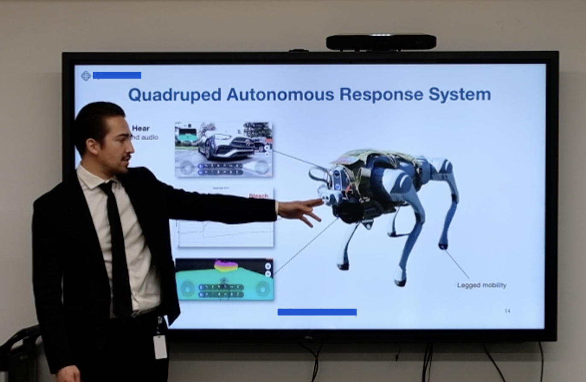

Customer Success
The most satisfying part of my work is helping customers achieve their goals. To this effect, I have led product demos and design reviews, written product design and operation documentation, and provided customer support.
I am grateful that technology has served as a bridge to connect me to people of different cultures. So far, I have worked with partners and clients in the USA, Mexico, Canada, Argentina, and Japan. I learned the Spanish language and I started learning Japanese, both for fun and for the added motivation of building camaraderie in the workplace.
That’s me, in the center of the photo below, leading a customer engineering team through a product demonstration at Skyloom headquarters.

And pictured below is me, my boss and two client representatives smiling after a Skyloom product passed its acceptance testing on the client site.

In my role as a Founding Engineer in Silicon Valley, my customer-facing work became investor-facing work. I wrote and edited our pitch decks and presented live demos of our technology to investors and strategic partners, ultimately leading to our $15M seed round and ongoing conversations for raising our Series A. Here I am below, explaining our legged robot capabilities in an investor pitch.
